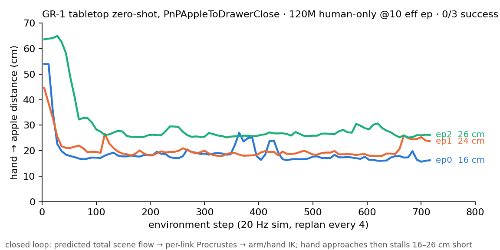
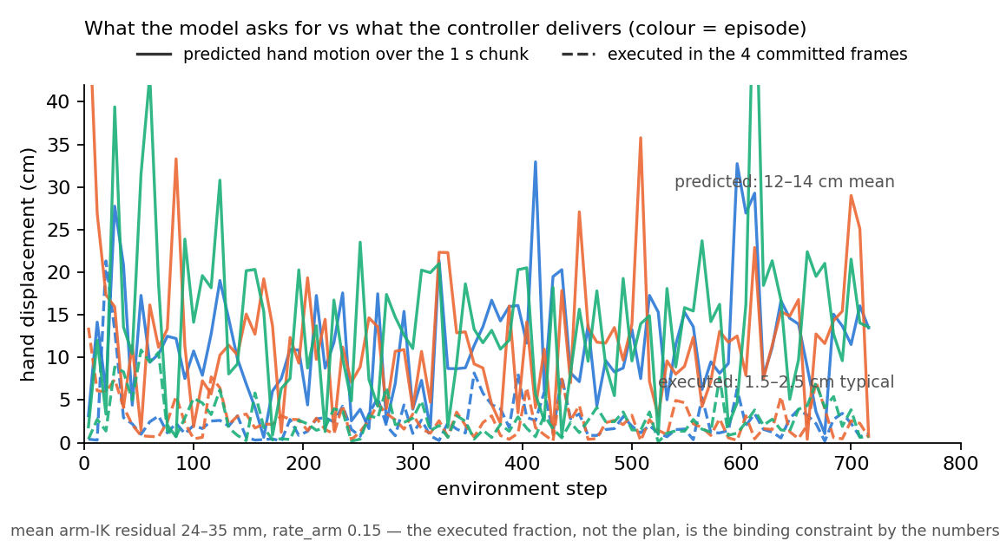

GR-1 tabletop zero-shot: 44 tasks, no fine-tuning
3D-WAM · a human-only scene-flow model drives the GR-1 humanoid in closed loop
Lab meeting
2026. 09. 03
Presented by 김범준 (beomjun)
Overview
[TL;DR] The loop closes on all 44 tasks; 2 of 117 episodes succeed; the arm stops short.
- 44 pick-and-place tasks × 3 episodes, human-only 120M model, zero robot data
- 2 successes: KettleToPlate, ObjectsTieredBasketToCounter
- Median final hand→object distance 23 cm; every clip in this deck

success = the benchmark's own flag · right Fourier hand · human tag · 720 steps (36 s) per episode · replan every 4 frames · rate_arm 0.15
Method: their arena, their metric, our point set
One labeled point set → scene flow → per-link Procrustes → IK. No retargeter.


MuJoCo · robosuite 1.5.1 · GR1ArmsAndWaistFourierHands · arm IK 7 joints + hand IK 6-dim coupled · 20 Hz sim, model at 10 Hz, 1 s horizon
Method: what goes in, what comes out
Training sampler on the sim meshes in; per-link rigid fit → IK → joint targets out.
| Stage | How | Numbers |
|---|---|---|
| ① Object points | target object body read off the env; visual mesh sampled ONCE at reset with the training sampler (face, barycentric), re-posed each step | 512 pts · one object · distractors, fixtures NOT in the set |
| ② Hand points | right Fourier hand = one entity, vertices posed per link (MuJoCo FK); MANO 16-part labels via a link→part map, fused link split so no label is missing | 512 pts · tag human · left hand, waist held, excluded |
| ③ Context | re-centred on the hand centroid as in training; history = the same points 0.1 / 0.2 s ago; text = the task instruction through frozen T5 | 1,024 pts · H = 2 · 10 Hz · k = 8 patches |
| ④ Predict | video-DiT samples the next 1 s of every point; object flow logged, not used for control | T = 10 frames · 16 steps · cfg 1.0 · 4 frames executed |
| ⑤ Hand → link poses | per link: Kabsch from current to predicted points (rest pose composed in) = target pose; links with < 4 points masked | palm fit ≤ 2 mm · fused fingertips carry the articulation loss |
| ⑥ IK → joints | arm: damped least squares on MuJoCo's kinematics, palm pose as target; hand: same solver in the 6-D coupled space (11 joints, 6 controls) | arm 7 joints, residual 24–35 mm · hand 6 · 30 iters · gate 25 mm |
| ⑦ Act | absolute joint-position targets, interpolated to 20 Hz, rate-limited; other parts held at reset | rate_arm 0.15 rad/step · rate_hand 0.4 · replan every 0.4 s |
gr1_obs.py (①–③) · gr1_policy_server.py (④) · hand_remap.py + gr1_loop.py (⑤–⑦) · IK on the compiled model · success flag, ego video from the env
Results
- The 44-task sweep
- 2 / 117 episodes succeed; 10 tasks end within 15 cm, 4 beyond 60 cm
- Why the hand stops short
| Quantity | Value |
|---|---|
| tasks ran / attempted | 39 / 44 |
| episodes · successes | 117 · 2 |
| median final distance | 23 cm |
| tasks ≤ 15 cm · > 60 cm | 10 · 4 |
| failed before step 0 | 5 |
120M p7 @ 10.00 eff ep (ckpt 180,608) · human tag · no fine-tuning · fixtures (drawer, cabinet, microwave) never pointed · rate_arm 0.15
Results
- The 44-task sweep
- Why the hand stops short
- the plan asks 12–14 cm per chunk; the arm delivers a fraction — the controller is the binding constraint
- approach is fast (first 100 steps), then the hand parks 16–26 cm out


Levers · raise rate_arm / execute more of each plan · point the fixtures (drawer, cabinet, microwave) · fix the 5 sim-side task loaders · retry with the 10 % Sharpa co-trained model
same episodes as the first GR-1 trial (09-03 12:30) · diagnostics from the per-episode npz (q_cmd vs q_meas, per-replan predicted vs executed hand motion)
Status · 2026-09-03 21:10 KST
Sweep complete; the next run changes the controller, not the model.
| # | Item | State | Result / next |
|---|---|---|---|
| ① | 44-task sweep · 3 episodes · human tag · p7 @ 10 ep | DONE 19:30 KST · 117 episodes · every clip embedded | 2 / 117 · median 23 cm short · owner verifies clips |
| ② | 5 tasks failed before step 0 · registry ×2, mesh ×1, version ×1, our obs builder ×1 | see the "Not rendered" slide | pending · fix, rerun the 5 (≈30 min) |
| ③ | Controller sweep · rate_arm 0.15 → 0.3 / 0.5 · execute 4 → 8 frames | not started | pending · same 44 tasks, same seeds · one variable per arm |
| ④ | Sharpa co-trained model · x10_sharpa @ 6 ep (job 5469) | training, lands ≈22:00 KST | pending · rerun the sweep with it → does robot data help the robot? |
| ⑤ | Bimanual · left hand in the point set and under control | not started (owner request 21:05) | pending · after the controller sweep |
Discussion — owner only:
- Controller first — the plan reaches the object, the arm does not → rate_arm / executed frames before any model change
- Fixtures — 15 drawer / cabinet / microwave tasks cannot succeed while fixtures are never pointed → add fixture points or drop them from the headline
grey italic rows = not landed · job 154163 on rlwrld debug · clips: results/gr1_trial/sweep_0903/<Task>/episode_0N.mp4
Rollouts · ego view vs model view · AppleToDrawerClose ep0
camera fixed per episode, over the right shoulder (+35° azimuth) · 90 replans · 20 Hz · first GR-1 trial 09-03 12:30, same model and settings as the sweep
Rollouts · ego vs model view · AppleToDrawerClose ep1–2
same rendering as the previous slide · predicted flow overlay updates every 8 steps
Rollouts · 1/39 · KettleToPlate · 1/3
PnPKettleToPlate · “pick the kettle non electric from the counter and place it in the plate” · point set = right hand + the task’s target object (obj_main), query phrase per episode below
ego view · 720 steps = 36 s · 120M p7 @ 10.00 eff ep, human tag, no fine-tuning · success = benchmark flag · distance = final hand→target object
Rollouts · 2/39 · ObjectsTieredBasketToCounter · 1/3
PnPObjectsTieredBasketToCounter · “pick the eggplant from the tiered basket and place it in the counter” · point set = right hand + the task’s target object (obj_main), query phrase per episode below
ego view · 720 steps = 36 s · 120M p7 @ 10.00 eff ep, human tag, no fine-tuning · success = benchmark flag · distance = final hand→target object
Rollouts · 3/39 · CanToBowl · 0/3
PnPCanToBowl · “pick the can from the counter and place it in the bowl” · point set = right hand + the task’s target object (obj_main), query phrase per episode below
ego view · 720 steps = 36 s · 120M p7 @ 10.00 eff ep, human tag, no fine-tuning · success = benchmark flag · distance = final hand→target object
Rollouts · 4/39 · PlateToPlate · 0/3
PnPPlateToPlate · “pick the potato from the plate and place it in the plate” · point set = right hand + the task’s target object (obj_main), query phrase per episode below
ego view · 720 steps = 36 s · 120M p7 @ 10.00 eff ep, human tag, no fine-tuning · success = benchmark flag · distance = final hand→target object
Rollouts · 5/39 · CounterToCuttingBoard · 0/3
PnPCounterToCuttingBoard · “pick the condiment bottle from the counter and place it in the cutting board” · point set = right hand + the task’s target object (obj_main), query phrase per episode below
ego view · 720 steps = 36 s · 120M p7 @ 10.00 eff ep, human tag, no fine-tuning · success = benchmark flag · distance = final hand→target object
Rollouts · 6/39 · FruitToPlate · 0/3
PnPFruitToPlate · “pick the squash from the counter and place it in the plate” · point set = right hand + the task’s target object (obj_main), query phrase per episode below
ego view · 720 steps = 36 s · 120M p7 @ 10.00 eff ep, human tag, no fine-tuning · success = benchmark flag · distance = final hand→target object
Rollouts · 7/39 · MilkToMicrowaveClose · 0/3
PnPMilkToMicrowaveClose · “pick up the milk, place it into the microwave and close the microwave” · point set = right hand + the task’s target object (obj_main), query phrase per episode below
ego view · 720 steps = 36 s · 120M p7 @ 10.00 eff ep, human tag, no fine-tuning · success = benchmark flag · distance = final hand→target object
Rollouts · 8/39 · CounterToPan · 0/3
PnPCounterToPan · “pick the egg from the counter and place it in the pan” · point set = right hand + the task’s target object (obj_main), query phrase per episode below
ego view · 720 steps = 36 s · 120M p7 @ 10.00 eff ep, human tag, no fine-tuning · success = benchmark flag · distance = final hand→target object
Rollouts · 9/39 · PotatoToMicrowaveClose · 0/3
PnPPotatoToMicrowaveClose · “pick up the potato, place it into the microwave and close the microwave” · point set = right hand + the task’s target object (obj_main), query phrase per episode below
ego view · 720 steps = 36 s · 120M p7 @ 10.00 eff ep, human tag, no fine-tuning · success = benchmark flag · distance = final hand→target object
Rollouts · 10/39 · ObjectsToTieredBasketLevel · 0/3
PnPObjectsToTieredBasketLevel · “pick the eggplant from the counter and place it on the level #2 of the the tiered basket” · point set = right hand + the task’s target object (obj_main), query phrase per episode below
ego view · 720 steps = 36 s · 120M p7 @ 10.00 eff ep, human tag, no fine-tuning · success = benchmark flag · distance = final hand→target object
Rollouts · 11/39 · EggplantToMicrowaveClose · 0/3
PnPEggplantToMicrowaveClose · “pick up the eggplant, place it into the microwave and close the microwave” · point set = right hand + the task’s target object (obj_main), query phrase per episode below
ego view · 720 steps = 36 s · 120M p7 @ 10.00 eff ep, human tag, no fine-tuning · success = benchmark flag · distance = final hand→target object
Rollouts · 12/39 · MilkPlateToPlate · 0/3
PnPMilkPlateToPlate · “pick the milk from the plate and place it in the plate” · point set = right hand + the task’s target object (obj_main), query phrase per episode below
ego view · 720 steps = 36 s · 120M p7 @ 10.00 eff ep, human tag, no fine-tuning · success = benchmark flag · distance = final hand→target object
Rollouts · 13/39 · BottleToCabinetClose · 0/3
PnPBottleToCabinetClose · “pick up the bottled water, place it into the cabinet and close the cabinet” · point set = right hand + the task’s target object (obj_main), query phrase per episode below
ego view · 720 steps = 36 s · 120M p7 @ 10.00 eff ep, human tag, no fine-tuning · success = benchmark flag · distance = final hand→target object
Rollouts · 14/39 · WineToCabinetClose · 0/3
PnPWineToCabinetClose · “pick up the wine, place it into the cabinet and close the cabinet” · point set = right hand + the task’s target object (obj_main), query phrase per episode below
ego view · 720 steps = 36 s · 120M p7 @ 10.00 eff ep, human tag, no fine-tuning · success = benchmark flag · distance = final hand→target object
Rollouts · 15/39 · AppleToDrawerClose · 0/3
PnPAppleToDrawerClose · “pick up the apple, place it into the drawer and close the drawer” · point set = right hand + the task’s target object (obj_main), query phrase per episode below
ego view · 720 steps = 36 s · 120M p7 @ 10.00 eff ep, human tag, no fine-tuning · success = benchmark flag · distance = final hand→target object
Rollouts · 16/39 · WineToDrawerClose · 0/3
PnPWineToDrawerClose · “pick up the wine, place it into the drawer and close the drawer” · point set = right hand + the task’s target object (obj_main), query phrase per episode below
ego view · 720 steps = 36 s · 120M p7 @ 10.00 eff ep, human tag, no fine-tuning · success = benchmark flag · distance = final hand→target object
Rollouts · 17/39 · CanToDrawerClose · 0/3
PnPCanToDrawerClose · “pick up the can, place it into the drawer and close the drawer” · point set = right hand + the task’s target object (obj_main), query phrase per episode below
ego view · 720 steps = 36 s · 120M p7 @ 10.00 eff ep, human tag, no fine-tuning · success = benchmark flag · distance = final hand→target object
Rollouts · 18/39 · AppleToCabinetClose · 0/3
PnPAppleToCabinetClose · “pick up the apple, place it into the cabinet and close the cabinet” · point set = right hand + the task’s target object (obj_main), query phrase per episode below
ego view · 720 steps = 36 s · 120M p7 @ 10.00 eff ep, human tag, no fine-tuning · success = benchmark flag · distance = final hand→target object
Rollouts · 19/39 · CanToCabinetClose · 0/3
PnPCanToCabinetClose · “pick up the can, place it into the cabinet and close the cabinet” · point set = right hand + the task’s target object (obj_main), query phrase per episode below
ego view · 720 steps = 36 s · 120M p7 @ 10.00 eff ep, human tag, no fine-tuning · success = benchmark flag · distance = final hand→target object
Rollouts · 20/39 · CupToDrawerClose · 0/3
PnPCupToDrawerClose · “pick up the cup, place it into the drawer and close the drawer” · point set = right hand + the task’s target object (obj_main), query phrase per episode below
ego view · 720 steps = 36 s · 120M p7 @ 10.00 eff ep, human tag, no fine-tuning · success = benchmark flag · distance = final hand→target object
Rollouts · 21/39 · CupToCabinetClose · 0/3
PnPCupToCabinetClose · “pick up the cup, place it into the cabinet and close the cabinet” · point set = right hand + the task’s target object (obj_main), query phrase per episode below
ego view · 720 steps = 36 s · 120M p7 @ 10.00 eff ep, human tag, no fine-tuning · success = benchmark flag · distance = final hand→target object
Rollouts · 22/39 · BottleToDrawerClose · 0/3
PnPBottleToDrawerClose · “pick up the bottled water, place it into the drawer and close the drawer” · point set = right hand + the task’s target object (obj_main), query phrase per episode below
ego view · 720 steps = 36 s · 120M p7 @ 10.00 eff ep, human tag, no fine-tuning · success = benchmark flag · distance = final hand→target object
Rollouts · 23/39 · CornToMicrowaveClose · 0/3
PnPCornToMicrowaveClose · “pick up the corn, place it into the microwave and close the microwave” · point set = right hand + the task’s target object (obj_main), query phrase per episode below
ego view · 720 steps = 36 s · 120M p7 @ 10.00 eff ep, human tag, no fine-tuning · success = benchmark flag · distance = final hand→target object
Rollouts · 24/39 · ObjectsTieredBasketLevelToLevel · 0/3
PnPObjectsTieredBasketLevelToLevel · “pick the corn from the tiered basket and place it on the level #1 of the the tiered basket” · point set = right hand + the task’s target object (obj_main), query phrase per episode below
ego view · 720 steps = 36 s · 120M p7 @ 10.00 eff ep, human tag, no fine-tuning · success = benchmark flag · distance = final hand→target object
Rollouts · 25/39 · RubixCubeBasketToCounter · 0/3
PnPRubixCubeBasketToCounter · “pick the rubix cube from the basket and place it in the counter” · point set = right hand + the task’s target object (obj_main), query phrase per episode below
ego view · 720 steps = 36 s · 120M p7 @ 10.00 eff ep, human tag, no fine-tuning · success = benchmark flag · distance = final hand→target object
Rollouts · 26/39 · ObjectsToTieredBasket · 0/3
PnPObjectsToTieredBasket · “pick the sweet potato from the counter and place it in the tiered basket” · point set = right hand + the task’s target object (obj_main), query phrase per episode below
ego view · 720 steps = 36 s · 120M p7 @ 10.00 eff ep, human tag, no fine-tuning · success = benchmark flag · distance = final hand→target object
Rollouts · 27/39 · CounterToBowl · 0/3
PnPCounterToBowl · “pick the spray from the counter and place it in the bowl” · point set = right hand + the task’s target object (obj_main), query phrase per episode below
ego view · 720 steps = 36 s · 120M p7 @ 10.00 eff ep, human tag, no fine-tuning · success = benchmark flag · distance = final hand→target object
Rollouts · 28/39 · CounterToPot · 0/3
PnPCounterToPot · “pick the bottled drink from the counter and place it in the pot” · point set = right hand + the task’s target object (obj_main), query phrase per episode below
ego view · 720 steps = 36 s · 120M p7 @ 10.00 eff ep, human tag, no fine-tuning · success = benchmark flag · distance = final hand→target object
Rollouts · 29/39 · CupToPlate · 0/3
PnPCupToPlate · “pick the cup from the counter and place it in the plate” · point set = right hand + the task’s target object (obj_main), query phrase per episode below
ego view · 720 steps = 36 s · 120M p7 @ 10.00 eff ep, human tag, no fine-tuning · success = benchmark flag · distance = final hand→target object
Rollouts · 30/39 · CounterToPlate · 0/3
PnPCounterToPlate · “pick the onion from the counter and place it in the plate” · point set = right hand + the task’s target object (obj_main), query phrase per episode below
ego view · 720 steps = 36 s · 120M p7 @ 10.00 eff ep, human tag, no fine-tuning · success = benchmark flag · distance = final hand→target object
Rollouts · 31/39 · ObjectsToShelf · 0/3
PnPObjectsToShelf · “pick the cheese from the counter and place it in the tiered shelf” · point set = right hand + the task’s target object (obj_main), query phrase per episode below
ego view · 720 steps = 36 s · 120M p7 @ 10.00 eff ep, human tag, no fine-tuning · success = benchmark flag · distance = final hand→target object
Rollouts · 32/39 · CupToMicrowaveClose · 0/3
PnPCupToMicrowaveClose · “pick up the cup, place it into the microwave and close the microwave” · point set = right hand + the task’s target object (obj_main), query phrase per episode below
ego view · 720 steps = 36 s · 120M p7 @ 10.00 eff ep, human tag, no fine-tuning · success = benchmark flag · distance = final hand→target object
Rollouts · 33/39 · OnionToBowl · 0/3
PnPOnionToBowl · “pick the onion from the counter and place it in the bowl” · point set = right hand + the task’s target object (obj_main), query phrase per episode below
ego view · 720 steps = 36 s · 120M p7 @ 10.00 eff ep, human tag, no fine-tuning · success = benchmark flag · distance = final hand→target object
Rollouts · 34/39 · FruitToPlacemat · 0/3
PnPFruitToPlacemat · “pick the peach from the counter and place it in the placemat” · point set = right hand + the task’s target object (obj_main), query phrase per episode below
ego view · 720 steps = 36 s · 120M p7 @ 10.00 eff ep, human tag, no fine-tuning · success = benchmark flag · distance = final hand→target object
Rollouts · 35/39 · ObjectsToShelfLevel · 0/3
PnPObjectsToShelfLevel · “pick the lemon from the counter and place it on the level #1 of the the tiered shelf” · point set = right hand + the task’s target object (obj_main), query phrase per episode below
ego view · 720 steps = 36 s · 120M p7 @ 10.00 eff ep, human tag, no fine-tuning · success = benchmark flag · distance = final hand→target object
Rollouts · 36/39 · MilkToBasket · 0/3
PnPMilkToBasket · “pick the milk from the counter and place it in the basket” · point set = right hand + the task’s target object (obj_main), query phrase per episode below
ego view · 720 steps = 36 s · 120M p7 @ 10.00 eff ep, human tag, no fine-tuning · success = benchmark flag · distance = final hand→target object
Rollouts · 37/39 · ObjectsShelfToCounter · 0/3
PnPObjectsShelfToCounter · “pick the peach from the tiered shelf and place it in the counter” · point set = right hand + the task’s target object (obj_main), query phrase per episode below
ego view · 720 steps = 36 s · 120M p7 @ 10.00 eff ep, human tag, no fine-tuning · success = benchmark flag · distance = final hand→target object
Rollouts · 38/39 · CylindricalToPlate · 0/3
PnPCylindricalToPlate · “pick the can from the counter and place it in the plate” · point set = right hand + the task’s target object (obj_main), query phrase per episode below
ego view · 720 steps = 36 s · 120M p7 @ 10.00 eff ep, human tag, no fine-tuning · success = benchmark flag · distance = final hand→target object
Rollouts · 39/39 · ObjectsShelfLevelToLevel · 0/3
PnPObjectsShelfLevelToLevel · “pick the mushroom from the tiered shelf and place it on the level #1 of the the tiered shelf” · point set = right hand + the task’s target object (obj_main), query phrase per episode below
ego view · 720 steps = 36 s · 120M p7 @ 10.00 eff ep, human tag, no fine-tuning · success = benchmark flag · distance = final hand→target object
Not rendered · 5 tasks failed before step 0
| Task | Error (first line of the log) | Episodes |
|---|---|---|
| PnPAppleToPlate | robocasa registry: no category for group [coffee_pod] | 0 |
| PnPBreadBasketToBowl | MuJoCo: mesh volume too small (obj_container_basket_4 collision mesh) | 0 |
| PnPCupToDishRackUpperLevel | robocasa.utils.object_utils has no check_obj_in_site (task repo vs robocasa version) | 0 |
| PnPPouring | OUR obs builder (gr1_obs.py): entity ball_obj_main has no mesh geoms to sample | 0 |
| PnPVegetableBowlToPlate | robocasa registry: no category for group [rubix_cube] | 0 |
robosuite 1.5.1 + robocasa-gr1-tabletop-tasks (pinned) · logs: code/logs/gr1_sweep_154163_<idx>.log · fix and rerun pending
Appendix · setup · evidence · cut list
- Model
- 120M video-DiT (d768 × 12), p7_i5_long10ep ckpt 180,608 = 10.00 eff ep, curated human corpus (taco, arctic, dexycb, oakink2, grab), no robot data, no fine-tuning.
- Loop
- wam/eval/gr1_loop.py (sim, gr1 env) ↔ gr1_policy_server.py (model, wam env) over localhost · 512 pts/entity, patch k=8, cfg 1.0, 16 sampler steps · replan every 4 frames (0.4 s) · 720 steps · rate_arm 0.15, rate_hand 0.4, gate 25 mm.
- Sweep
- rlwrld debug, job 154163 array 0–43 (scripts/gr1_sweep.sbatch, gr1_tasks.txt), 3 seeds per task · results/gr1_trial/sweep_0903/<Task>/{results.json, episode_0N.mp4, episode_0N.npz}.
- Numbers
- 39 tasks ran · 117 episodes · 2 successes (KettleToPlate ep2, ObjectsTieredBasketToCounter ep1) · median task-mean final distance 23.3 cm · 10 tasks ≤ 15 cm · 4 tasks > 60 cm (90 / 102 / 138 / 363 cm).
- Clips
- 117 ego-view mp4, re-encoded 480 px H.264 for the page (originals 640×400, 20 Hz, 36 s) — all embedded, one slide per task.
- Table
- server-mirror/pull4/gr1_trial/sweep_0903/sweep_table.json · figs/gr1_sweep{,_wide}.png.
Cut: per-replan diagnostics for all 117 episodes · q_cmd vs q_meas traces · per-task step counts · the first-trial (12:30) slides now folded into Results ②.